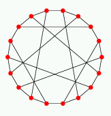

Up

Pappus graph
The Pappus graph Γ is the bipartite incidence graph of the
9 points and 9 lines of the affine plane AG(2,3) minus
a parallel class.
It is cubic, of girth 6.
It is the unique distance-regular graph with intersection array
{3,2,2,1; 1,1,2,3}.
Group
Γ is distance transitive with group 32:3:2:2:2 of order 216
with point stabilizer D12.
Spectrum
Γ has spectrum ±3, (±√3)6, 04
and is uniquely determined by its spectrum.